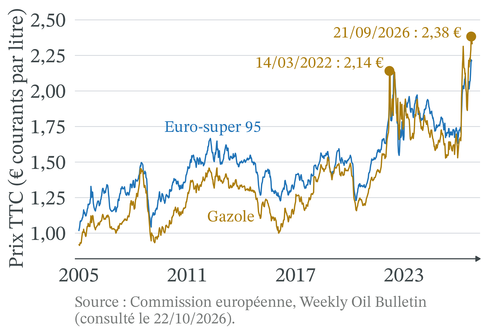

La crise d’Ormuz : pourquoi les carburants ont-ils flambé ?
CM 1 · Partie I · Marchés, prix et régulations
Le détroit d’Ormuz : un passage étroit entre l’Iran et Oman

- Le golfe Persique ne communique avec le golfe d’Oman que par ce passage, entre l’Iran au nord et la péninsule omanaise de Musandam au sud.
- Tous les navires qui quittent le Golfe doivent le franchir : d’où la facilité de le bloquer.
Carte en anglais : Goran tek-en, CC BY-SA 4.0, Wikimedia Commons.
Les unes de presse : un coût qui monte, des automobilistes contraints
- Le Figaro, 09/03/2026 : « La hausse des coûts d’approvisionnement en pétrole fait flamber les prix des carburants ».
- Sud Ouest, 30/03/2026 : « Si cela continue, je n’aurai plus les moyens d’aller travailler ».
- Les deux moitiés du raisonnement : l’offre recule (choc d’offre) ; la demande est peu élastique à court terme.

Portland, janvier 1974 · David Falconer, DOCUMERICA (EPA), domaine public, Wikimedia Commons
Marshall (1890) : le prix, rencontre de l’offre et de la demande
 Vers 1891 · Elliott and Fry, domaine public, Wikimedia Commons
Vers 1891 · Elliott and Fry, domaine public, Wikimedia Commons
Alfred Marshall (1890), Principles of Economics · école néoclassique. Le prix se fixe là où la quantité offerte égale la quantité demandée. Marshall isole un seul marché et fait varier une seule cause à la fois.
Offre et demande sont les deux lames d’une paire de ciseaux : pour expliquer une hausse de prix, il faut dire quelle courbe a bougé, et pourquoi.
Choc d’offre (3/3) : nouvel équilibre E′, prix plus haut, quantité plus faible

- L’ajustement : les acheteurs enchérissent, le prix monte.
- Il décourage des achats : on glisse le long de D, de E vers E′.
- Il rend rentables des barils plus coûteux : on glisse le long de O′.
Offre en escalier (2/2) : sans le Golfe, le prix passe à 80 $

- L’escalier se décale de 10 Mb/j vers la gauche : O′.
- Il faut X, Y et Z : prix = 80 $, soit (80 − 60) ÷ 60 = +33 %.
- Aucun coût n’a augmenté ; X gagne 40 $ par baril au lieu de 20 $.
Même choc, deux demandes (2/2) : le prix ou la quantité encaisse

- A : 2,20 € et 90 ; prix +29,4 %, quantité −10 %.
- B : 1,95 € et 85 ; prix +14,7 %, quantité −15 %.
- Plus la demande est inélastique, plus le choc passe dans le prix, moins dans la quantité.
Application à 2026 : le prix affiché à la pompe

Photo : Tabl-trai, CC BY-SA 4.0, Wikimedia Commons
- Cusset (Allier), 19/04/2026 : SP95-E10 à 2,031 €, gazole à 2,274 € le litre.
- Prix taxes comprises, proche des moyennes nationales de la semaine du 13 avril : 2,04 € et 2,31 €.
Prix plafond de TotalEnergies : un prix maintenu sous l’équilibre

- Depuis le 22/07/2026, dans ses quelque 3 300 stations : SP95-E10 à 1,99 € au plus, gazole à 2,25 € (TotalEnergies).
- Un plafond (prix maximal) fixé par une entreprise, non par l’État.
- Sous l’équilibre, la pénurie réapparaît.